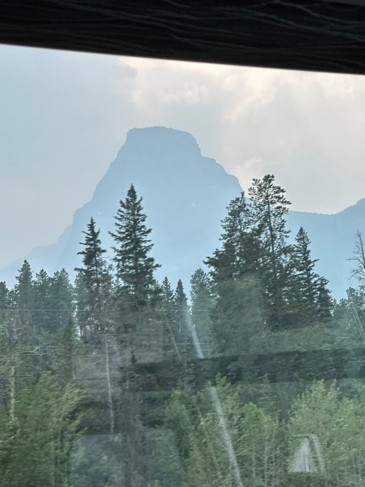
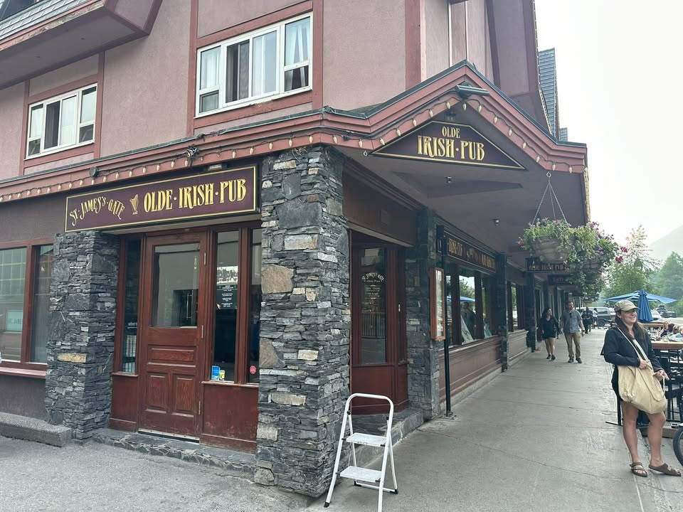
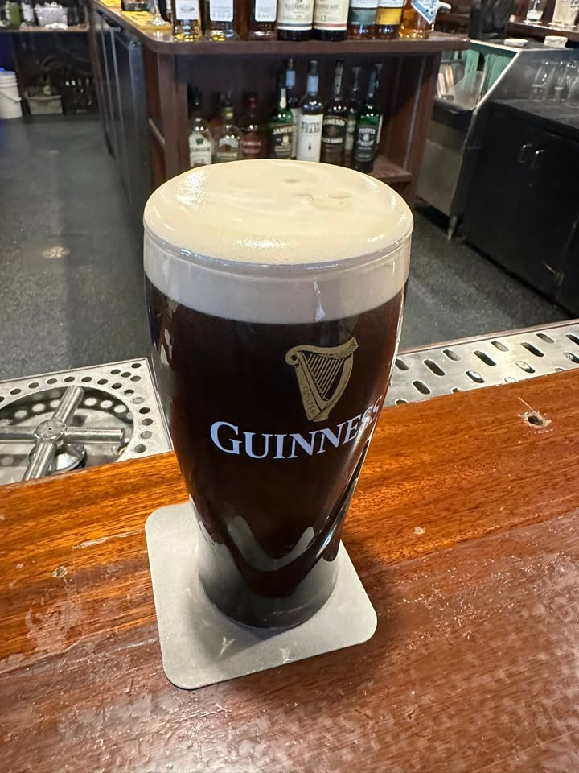

I’ve always been an early riser, but no amount of coffee helped this morning at 3 AM. Check-in with American Airlines and security went smoothly, although the flight had intense turbulence—perhaps the worst I’ve ever experienced.

From the Journey
Due to the weather, flights into Dallas were delayed, but it didn’t affect me. Upon arriving in Canada, customs was a breeze, despite the customs officer giving me a puzzled look when I mentioned I’d be biking back. I’m used to that reaction by now.
The key moment was whether my bike would arrive intact. Success! My box did get wet, but it held together well, giving me hope for no damage during transit.

From the Journey
I faced two main issues: my phone had no service, and I didn’t have a guaranteed bus ticket to Banff. Luckily, a quick call restored my phone service, and when I arrived at the bus ticket office, they issued me a ticket right away. I didn’t even have time for lunch!
Flying into Canada, I noticed smoke from forest fires blanketing the air from Calgary to Banff, so my hopes for great sky pictures will have to wait.

From the Journey
The bus dropped me at the hostel, which was far from packed, and they honored my reservation. I did pay for the night prior, but I wasn’t too worried about it.
In the courtyard, I connected with other bikers while assembling my bike. That evening, I enjoyed a couple of Guinness and lamb steak at an Irish pub.

From the Journey
Everything is settled. Tomorrow, I plan to buy supplies like bear spray, camp fuel, and food for the journey. If the weather cooperates, I might capture some photos and hang out with great people.